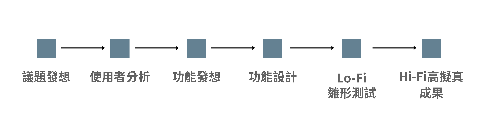
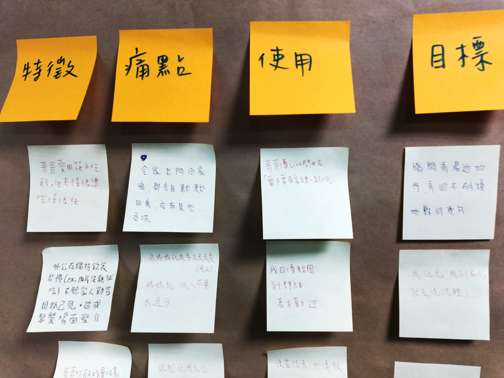
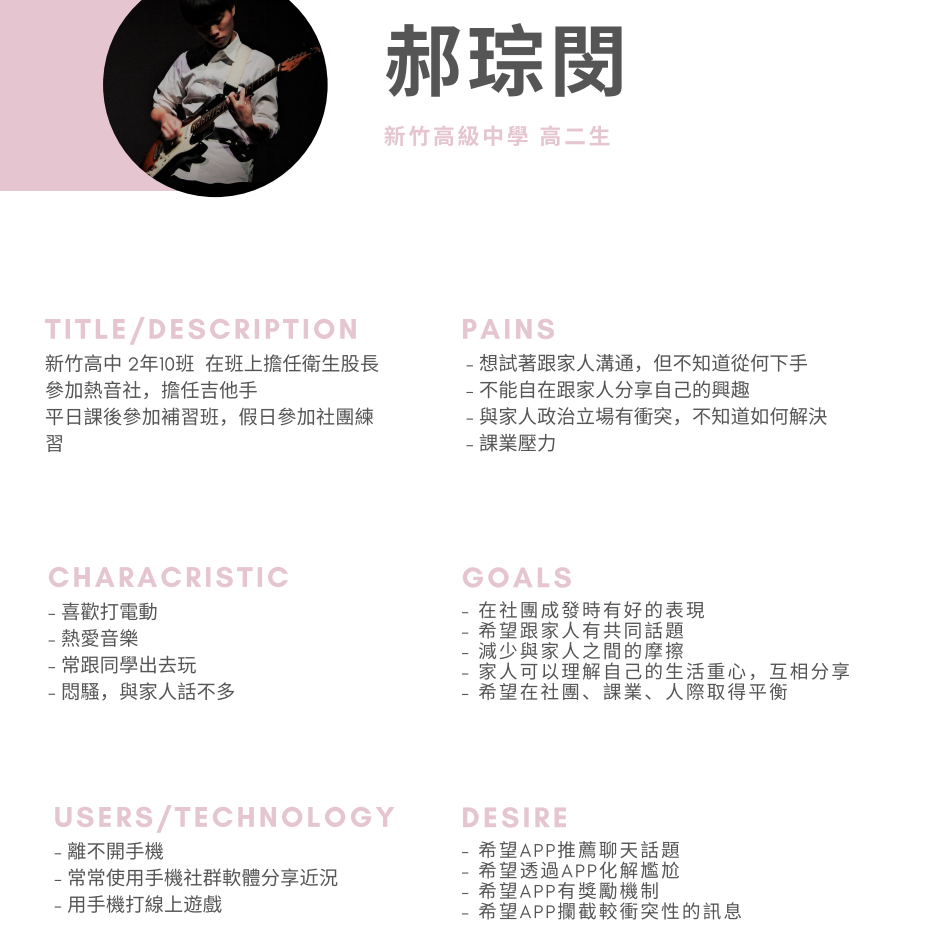
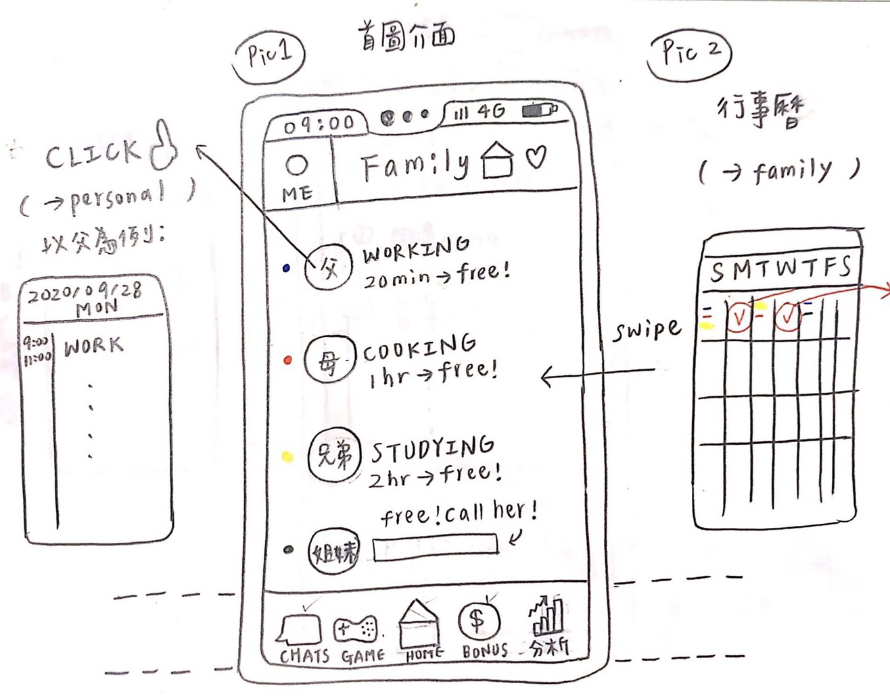
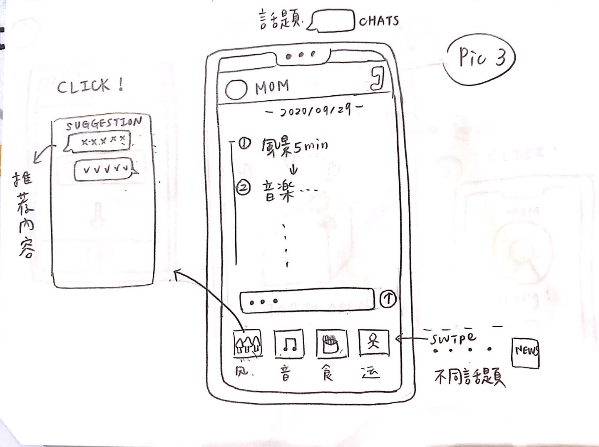
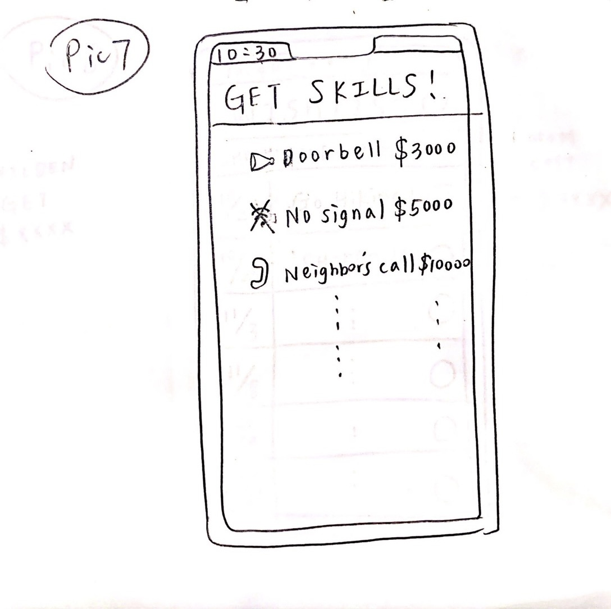
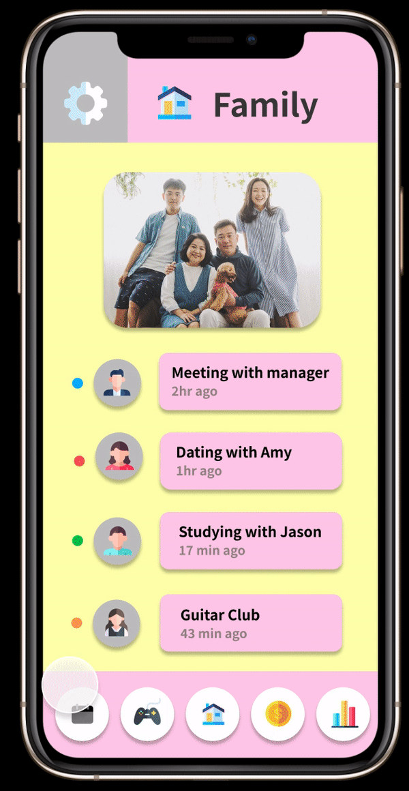
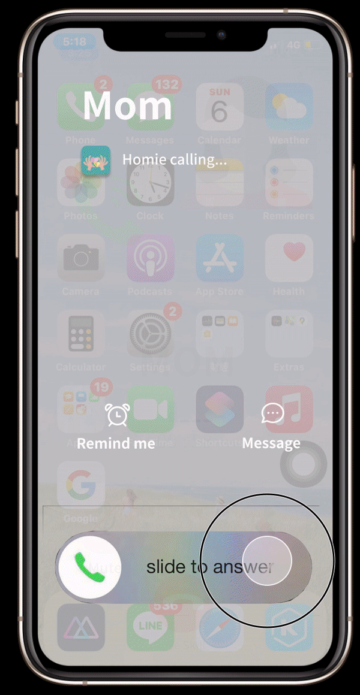

時間 | 2020/09 - 2020/12
角色 | 共同合作
方法 | Affinity Diagram、Persona & Scenarios、Sketch Storyboards、Lo-Fi Prototype Testing、Hi-Fi Prototype Testing
社群媒體產生的便利性讓朋友跟同學之間的交流越甚緊密，但也因尷尬等因素產生許多拒絕讓家人追蹤、甚至是封鎖的情形，導致好像自己最親近的人卻是最不了解自己的人。 因此，我們想設計出一個家人之間願意分享的設計，想辦法轉移社群中尷尬、抗拒的部分，另外，結合獎勵機制讓家庭成員更願主動接近這個裝置，主要瞄準的客群為交流情況偏低的家庭，希望能藉此提升家庭成員之間的交流與感情。
摘要
設計流程

使用者研究

經由設計研究，每位組員各自花了2小時的時間進行觀察，並發想了幾個家庭成員互動程度低的因素，接著我們利用親和圖（Affinity Diagram），每位組員皆把自己所觀察到的現象寫在便條紙中，並將其分類，我們整合出以下幾個主要的類別：
- 因情緒問題而不想與家人溝通
- 找不到與家人的話題
- 本身沒有與家人互動的習慣
- 因尷尬而不好意思與家人分享
- 與家人時間對不上
- 手機嚴重影響人們的生活
- 因懶惰及疲憊而懶得與家人互動

透過前幾次的觀察建立了人物誌（Persona）。
郝琮閔為我們的主要使用者，會選擇這個角色作為主要使用者是因為對於青少年來說，手機佔了生活中相當大的部分，往往會因為過度將注意力放在手機上而忽略與家人間的互動。此外，大部分的觀察中，兒子大多較為叛逆，常常會因為家人嘮叨幾句而感到不耐煩、覺得家人對自己過度干涉。上述都是家人間的分享、溝通不良的常見因素。我們希望藉由我們設計的作品讓子女更了解父母，找到共同話題，理解與父母的想法與感受，並不再逃避與父母對話。
功能設計
根據我們的洞察以及design sketches，想像我們的使用者可能面臨的情況，並在完成之後再次確認我們的app是否能解決使用者遭遇到的問題。

此為首頁頁面，每位家庭成員下方皆顯示目前狀態，點擊頭像可觀看該成員當日行程。

此為聊天室頁面，聊天室包含了話題推薦的功能，選擇主題後會出現推薦內容供家庭成員討論。

此為掛電話技能頁面，當不想繼續通話但找不到理由掛電話時，可透過這些技能來作為掛電話的藉口，這些技能需透過點數在獎勵頁面購買。
Lo-Fi Prototype Testing
我們以紙本Sketches進行初步的Prototype測試。
Hi-Fi Prototype
我們以Figma進行繪製，並在頁面的設計與配色上進行了兩次的迭代。


此為第一版的設計，左圖為家庭共通行事曆的功能，右則為電話技能的功能。


此為最終版的設計，在頁面的配置與配色上都進行了調整。
成果與反思
在整個專案進行的過程，我們由「家」出發，共同設計了一款增進家感情的app，除了傳統的聊天功能，也設計了共同行事曆、小任務、小遊戲與商城等功能，企圖創造出交流情感也能像玩遊戲一樣有趣的情景。我們從使用者的角度出發，探討了不同家庭成員之間對於構通互動上面的痛點，希望這個設計能帶在家庭關係中建立新的橋樑。